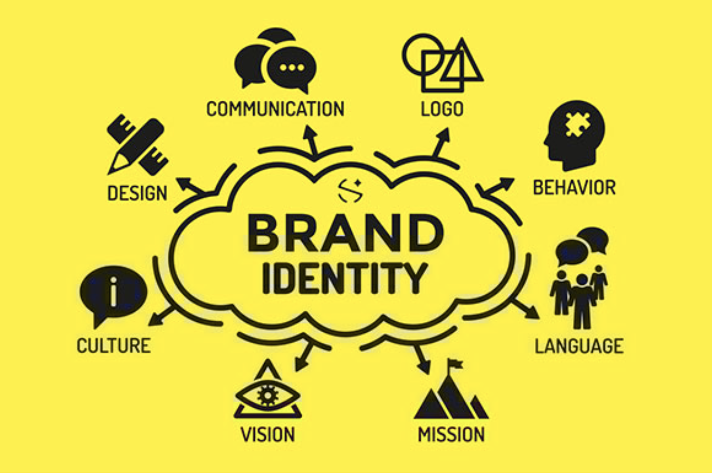

Our Services
Comprehensive solutions tailored to your brand

Brand Identity
We craft unique visual identities that communicate your brand's essence. Our comprehensive package includes:
- Logo design & variations
- Color palette development
- Typography system
- Brand guidelines
- Stationery design
- Mockup designs
- Business card designs
- Letterhead designs

Logo Design
Memorable logos that stand the test of time. Our process includes:
- Industry research
- Conceptual sketching
- Multiple design options
- Revisions & refinements
- Final file delivery
- Source file
- Fast delivery

Social Media Design
Scroll-stopping content for all platforms. We create:
- Platform-specific templates
- Campaign visuals
- Story & reel content
- Animated posts
- Content calendars
- Online posting
- Daily basis service

Web Design
Beautiful, functional websites that convert visitors. Our approach includes:
- UX/UI design
- Custom homepage & inner pages design
- Responsive layouts
- Prototyping
- CMS integration
- Contact forms
- Performance optimization
- Image sliders or carousels
- Google Maps integration
- Admin dashboard UI
- Multi-language layout (i18n ready)

Web Development
Robust technical solutions built to last. Our development services include:
- Front-end development
- Back-end systems
- JavaScript interactivity
- E-commerce solutions
- API integrations
- Form validation (client-side)
- Ongoing maintenance
- Database integration
- Search/filter systems
- User profile management
- Domain connection
- Hosting setup and deployment

App Design
Intuitive mobile experiences users love. We deliver:
- User research
- Custom app screen designs
- Dark mode / light mode options
- App branding assets
- Web app (PWA) UI design
- Design handoff support
- Wireframing
- Interactive prototypes
- UI design systems
- Developer handoff
- Redesign of existing app interface
- App store preview graphics